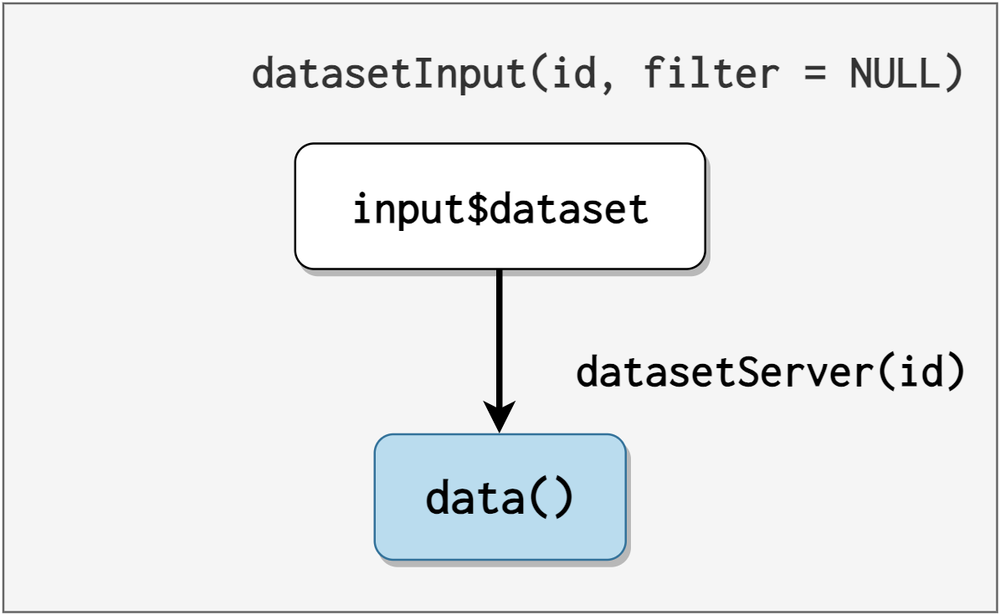
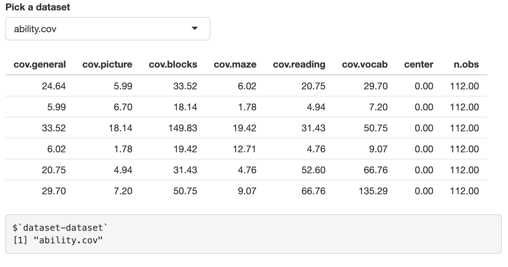

# to get the mstsap package used in this post:
renv::install("mjfrigaard/mstsap", prompt = FALSE)
library(mstsap)This is the third post in a series on testing shiny applications. I’ll cover testing shiny module server functions using the testhat package and shiny’s testServer() function.
Testing shiny modules

Shiny functions pose a couple of unique challenges for testing. First, we can’t execute shiny server functions in the console. Second, as shiny apps become more complex, it’s highly recommended to break up the code base into modules. Modules have additional challenges due to their reactivity being split between interconnected UI and server functions.
shiny doesn’t provide a direct, built-in way to test modules, but the testServer() function addresses these challenges by testing “reactive interactions” in module server functions. testServer() also works with testthat, which means we can structure these ‘reactive interaction’ tests just like other unit tests (for non-application functions).
Shiny app-package
testthat is designed to work within an R package, so I’ve put together the mstsap, (i.e., a Mastering Shiny testServer app-package) to demonstrate writing tests with testServer(). The functions, modules, and applications in mstsap come from the Shiny Modules chapter of Mastering Shiny. Specifically, sections 19.3 through 19.3.4. If you haven’t read this chapter–start there.
Modules
Shiny modules are ‘a pair of UI and server functions’ designed to compartmentalize input and output IDs into distinct namespaces (“a namespace is to an ID as a directory is to a file”).
█─shinyApp
├─ui = █─fluidPage
│ └─█─mod_ui
│ └─id = "X"
├─server = `function(input, output, session)`
└─█─mod_server
└─id = "X" In a previous post, I used the following definition for unit tests,
“A unit test is a piece of code that invokes a unit of work and checks one specific end result of that unit of work.” - The Art of Unit Testing, 2nd edition
Modules can also be broken into discrete ‘units of work’ with expected ‘end results.’ However, the ‘unit of work’ for a shiny module is usually accomplished using a combination of three functions: a module UI function, a module server function, and any helper/utility functions.
Modules in mstsap
mstsap contains three modules: dataset, selectVar, and selectDataVar. If you’re like more information on a module, click on the links in the numbered list.
Dataset module
datasetInput/datasetServer: loads and returns data object from thedatasetspackage (filtered by data frames or matrices)

dataset moduledataset moduleThe objects from
datasetsare filtered in the UI module function with afilterargument that can be used to “limit the options to built-in datasets that are either data frames (filter = is.data.frame) or matrices (filter = is.matrix)”. Thenamesare passed to thechoicesin theselectInput():show/hide choices in datasetInput()
names <- ls("package:datasets") if (!is.null(filter)) { data <- lapply(names, get, "package:datasets") names <- names[vapply(data, filter, logical(1))] }The
datasetsobject is returned withget()(wrapped inreactive()). See below:show/hide returned data from datasetServer()
shiny::reactive( get(input$dataset, "package:datasets") )
selectVar module
selectVarInput/selectVarServer: displays aselectInput()that “allows the user to select variables of specified type from a given reactive dataset.”

selectVar moduleselectVar moduleThe data argument in selectVarServer() is the returned value from datasetServer():
data()is used with thefilterargument in thefind_vars()function:show/hide find_vars()
find_vars <- function(data, filter) { # I've included the updated version with the 'stopifnot()' checks! stopifnot(is.data.frame(data)) stopifnot(is.function(filter)) names(data)[vapply(data, filter, logical(1))] }- The filter argument can be used to return variables by class/type (using
is.*functions likeis.numeric()oris.character())
- The filter argument can be used to return variables by class/type (using
When
data()changes, the output fromfind_vars()updates the choices in the variableselectInput()(i.e.,input$var) (see below)

selectVar and find_vars()selectVar module and find_vars() functionselectVarServer()also returns the selected variable (input$var) as a reactive value (var())
selectDataVar module
selectDataVarUI/selectDataVarServer: TheselectDataVarmodule is from the section titled, “Modules inside of modules”, so here we see thedatasetandselectVarmodules placed inside theselectDataVarmodule (each with a new namespace (NS())).

selectDataVar moduleselectDataVar moduleStandalone app functions
mstsap contains three standalone functions for running each set of module functions.
I’ve made a small change to each standalone app function–each app has a call to reactiveValuesToList() that displays in the UI.
print reactive values
shiny::verbatimTextOutput("vals")
output$vals <- shiny::renderPrint({
x <- shiny::reactiveValuesToList(input,
all.names = TRUE)
print(x)
})datasetApp
datasetApp() contains a call to the dataset module, and includes a tableOutput() to render the selected data object:
datasetAppdatasetAppWhen datasetApp() is run, the app displays the dataset object in the tableOutput(), and the verbatimTextOutput() renders the reactive values as a text:

datasetApp with reactive valuesdatasetApp with reactiveValuesToList()The output above shows what NS() does in the dataset module–it appends the module id argument to the inputId (which is why we see dataset-dataset).
dataset-: the module iddataset-datasettheinputIdfrom theselectInput()
selectVarApp
selectVarApp() includes both dataset and selectVar modules, but instead of rendering the output in a table, the UI renders the variable output in a verbatimTextOutput().

selectVarAppselectVarAppNote that selectVarApp() contains namespaces for two modules:
"data": the namespace for thedatasetnput()anddatasetServer()modules, inheriting thefilterargument and creating the data object"var": theselectVarmodules are linked with the"var"id.selectVarServer()uses thedataobject created bydatasetServer()(and also inherits thefilterargument).
These namespaced IDs are rendered below with reactiveValuesToList():

selectVarApp with reactive valuesselectVarApp with reactiveValuesToList()There’s a lot happening in selectVarApp(), so I’ve created the figure below to display the code for the modules with their displayed outputs:
selectVarApp schemadataset and selectVar modules with rendered outputsAs we can see, the data output from the dataset module is used to generate the vars() reactive for the verbatimTextOutput() in selectVarApp(). Note that both dataset and selectVar modules don’t contain any output functions–these have been provided in the UI for both datasetApp() and selectVarApp().
selectDataVarApp
The final app in mstsap is selectDataVarApp(). Here the inputs from dataset and selectVar have been moved into the sidebarPanel(), and the output is rendered in the mainPanel().

selectDataVarAppselectDataVarAppThe reactive values here show how the ‘Modules inside of modules’ work–by adding the additional call to NS() in the datasetInput() and selectVarInput() functions within selectDataVarUI() and selectDataVarServer(), an additional namespace is appended to the reactive values (input$dataset and input$var):

selectDataVarApp with reactive valuesselectDataVarApp with reactiveValuesToList()Below is a figure that displays the contents of the selectDataVar modules (I’ve removed the tagList() and moduleServer() for simplicity), the selectDataVarApp(), and the rendered outputs:
selectDataVarApp schemadataset and selectVar modules inside selectDataVar module with rendered outputstestServer()
Module server functions can be tested the same way as a traditional shiny server function, as long as you provide the inputs and verify the correct outputs. Below I’ll cover some general advice on module server tests (and the arguments in testServer()).
Testing module server functions
Before writing tests, make sure you can answer the following:
- What is the overall purpose of the application?
- This information is typically referred to as the ‘business logic’ of the application, and should be stored in a specifications or requirements document. If I can’t answer this question, I’m probably better off not writing test for code that is likely to undergo major changes.
- How does this module fit within that overall purpose?
- Specifically, how does this module help the application achieve the specifications or requirements? This could also be considered the ‘unit of work’ and ‘end result’ for the module.
- What dependencies (i.e., utility functions, data, add-on packages) are required for the module to execute?
- If the module depends on other functions, data, or packages to perform it’s expected behavior, those functions should either be included in the
testServer()test, or have their own tests (or both).
- If the module depends on other functions, data, or packages to perform it’s expected behavior, those functions should either be included in the
What should I test?
The items below have been compiled from Mastering Shiny, R Packages, and Engineering Production-Grade Shiny Apps:
- Do the inputs/outputs behave as expected?
- These tests verify the module server function
inputIds andoutputIds are properly namespaced and accessible
- These tests verify the module server function
- Does the module contain the expected reactive values/objects?
- Tests should verify it’s reactivity–module server functions will automatically recompute the outputs when it’s inputs change, so tests should verify changes to inputs produce the expected behaviors and outputs. This includes any returned values from the module (and any additional function arguments).
- Are the calculations correct?
- If the module server function performs calculations or data manipulations, the tests should verify the module produces the correct result (ideally for a variety of inputs and edge cases).
- How are errors handled in the module?
- What errors are displayed from the module? Tests should simulate scenarios that can test if the module: 1) returns errors that are informative, 2) fails silently (when appropriate), or 3) falls back to the correct default behavior.
The last piece of advice I’ve found helpful when writing tests comes from R Packages,
“focus your time on code that you’re not sure about, is fragile, or has complicated interdependencies”
The quote isn’t in reference to testing modules or shiny application functions, but I’ve found it’s easy to fall into the trap of trying to test everything when a targeted approach is more efficient (and equally valid).
The first test I’ll perform is for datasetServer(), the module used to return a data object from the datasets package.
testServer() arguments
appcan be a module server function (i.e.,datasetServer), or anyshiny.appobjexpris where I’ll add thetestthatexpectations and other test codeargsis alist()I can use to include any module server function arguments
Inputs
I created the test file with usethis::use_test("datasetServer") and the module server function is the first argument in testServer().
I’ll start by testing if the initial input value (input$dataset) in datasetServer() is set to NULL:
shiny::testServer(app = datasetServer, expr = {
testthat::expect_equal(input$dataset, NULL)
cat("\ndatasetServer: dataset$input is NULL", "\n")
})I’ll add a custom message with
cat()and theinputIdI’m testing, load, document, and install the package, then run the test withtestthat::test_file():devtools::load_all() ℹ Loading mstsap devtools::document() ℹ Updating mstsap documentation ℹ Loading mstsap Restarting R session... library(mstsap)- And run the test with
testthat::test_file():
test_file("tests/testthat/test-datasetServer.R")[ FAIL 0 | WARN 0 | SKIP 0 | PASS 1 ] datasetServer: dataset$input is NULL- And run the test with
Setting test inputs
testServer() allows us to mimic changing application (or module) inputIds with session$setInputs() like so:
session$setInputs(inputId = "value")I’ll demonstrate with a test for input$dataset in datasetServer():
session$setInputs(dataset = "faithful")
testthat::expect_equal(
object = input$dataset,
expected = "faithful")
test_cmt("datasetServer", "dataset$input")The results from test_file() are below:
[ FAIL 0 | WARN 0 | SKIP 0 | PASS 2 ]
datasetServer: dataset$inputReturned values
Any returned values from module server functions can be accessed in testServer() with session$returned(). I’ll verify input$dataset returns an object from datasetServer() by testing the class of session$returned():
show/hide test with session$returned()
session$setInputs(dataset = "airquality")
testthat::expect_equal(
object = class(session$returned()),
expected = "data.frame")
test_cmt("datasetServer", "class(session$returned())")
session$setInputs(dataset = "WorldPhones")
testthat::expect_true(
object = is.matrix(session$returned()))
test_cmt("datasetServer", "is.matrix(session$returned())")Note that both methods above can be used to check the class of the returned object.
The updated results from test_file() are below:
[ FAIL 0 | WARN 0 | SKIP 0 | PASS 3 ]
datasetServer: class(session$returned())
[ FAIL 0 | WARN 0 | SKIP 0 | PASS 4 ]
datasetServer: is.matrix(session$returned()) I can also use the
typeof(datasets::mtcars)for a direct comparison:show/hide test with session$returned()
session$setInputs(dataset = "mtcars") expect_equal( # app value... object = typeof(session$returned()), # ...compared to actual output expected = typeof(datasets::mtcars)) test_cmt("datasetServer", "typeof(session$returned())")
Module server arguments
If the module server function has additional arguments beyond id, then it has additional functionality to verify with unit tests. To test additional module server arguments, pass these to testServer(args = list()). The args list should include named arguments from the module server function, i.e., list(arg1 = "param1", arg2 = "param2").
For example, selectVarServer() has data and filter arguments:
datais the returned reactive object fromdatasetServer()filteris the function passed to thefind_vars()utility function

dataset() -> selectVar()datasetServer() and passed to selectVarServer()Below is a test for selectVarServer() using args to verify the reactive data() is datasets::mtcars:
shiny::testServer(selectVarServer,
args = list(data = datasets::mtcars,
filter = is.numeric), expr = {
testthat::expect_true(
object = is.reactive(data))
test_cmt("selectVarServer", "is.reactive(data())")
})But this fails with the following error:
testthat::test_file("tests/testthat/test-selectVarServer.R")[ FAIL 1 | WARN 0 | SKIP 0 | PASS 0 ]
── Error (test-selectVarServer.R:1:1): (code run outside of `test_that()`) ───
Error in `(function (id, data, filter = is.numeric)
{
stopifnot(shiny::is.reactive(data))
stopifnot(!shiny::is.reactive(filter))What happened?
I’ve included this example because it’s not in the testServer() documentation, and it’s common to pass values between modules (see here in Engineering Production-Grade Shiny Apps and here in Mastering Shiny)
Testing module communication
The error message above tells me the issue is originating from the stopifnot() calls in selectVarServer().
I’ll stop a moment here to address what’s happening in each module:
The
datasetServer()returns the results ofinput$datasetas a reactive (data())data()entersselectVarServer()in thedataargumentInside
selectVarServer(), twostopifnot()functions evaluate the reactivity ofdataandfilterwithshiny::is.reactive()
In datasetServer(), the return object is wrapped in the reactive() function, so the items args = list() also need to be wrapped in reactive().
I’ll re-write the test above to a more basic test using is.reactive():
shiny::testServer(selectVarServer,
args = list(data = reactive(datasets::mtcars),
filter = is.numeric), expr = {
testthat::expect_true(
object = is.reactive(data()))
test_cmt("selectVarServer", "is.reactive(data())")
})testthat::test_file("tests/testthat/test-selectVarServer.R")[ FAIL 1 | WARN 0 | SKIP 0 | PASS 0 ]
selectVarServer: is.reactive(data())
── Failure (test-selectVarServer.R:1:1): (code run outside of `test_that()`) ───
is.reactive(data()) is not TRUE
`actual`: FALSE
`expected`: TRUE Another failure???
The results of this test might seem confusing given my advice to wrap the args list in reactive(), but some reading of the x argument in is.reactive() will clear up the error:
For
is.reactive(), an object to test. Forreactive(), an expression.
Removing the parentheses from data() will result in the proper test results:
shiny::testServer(selectVarServer,
args = list(data = reactive(datasets::mtcars),
filter = is.numeric), expr = {
testthat::expect_true(
object = is.reactive(data))
test_cmt("selectVarServer", "is.reactive(data())")
})testthat::test_file("tests/testthat/test-selectVarServer.R")[ FAIL 0 | WARN 0 | SKIP 0 | PASS 1 ]
selectVarServer: is.reactive(data()) Utility functions
Now that I have a reactive data() input, I can explore how this value is used inside selectVarServer(). To update input$var, the data() input is passed to find_vars() (a function that uses a filter argument “used to select which variables to list”). See the example below:
mstsap::find_vars(
data = datasets::chickwts,
filter = is.factor)
## [1] "feed"I’ll write an expectation that captures the behavior of find_vars() in selectVarServer():
shiny::testServer(selectVarServer,
args = list(data = reactive(datasets::chickwts),
filter = is.numeric), expr = {
testthat::expect_equal(
object = find_vars(data(), is.factor),
expected = "feed")
test_cmt("selectVarServer", "find_vars()")
})The results are below:
[ FAIL 0 | WARN 0 | SKIP 0 | PASS 2 ]
selectVarServer: find_vars()To verify that the returned object from selectVarServer() is the selected column, I’ll need to simulate the application behavior in the tests:
Create a reactive
data()input inselectVarServer():setting args = list()
shiny::testServer(selectVarServer, args = list(data = reactive(datasets::chickwts), filter = is.numeric), expr = { # include expectations below... })Set the
input$varand verify theinput$var:verify input$var
session$setInputs(var = "weight") testthat::expect_equal(object = input$var, expected = "weight") test_cmt("selectVarServer", "input$var")Set the
input$varand verify thesession$returned()verify session$returned()
session$setInputs(var = "feed") testthat::expect_equal(object = session$returned(), expected = datasets::chickwts[["feed"]]) test_cmt("selectVarServer", "session$returned()")
The results from these tests are below:
[ FAIL 0 | WARN 0 | SKIP 0 | PASS 3 ]
selectVarServer: input$var
[ FAIL 0 | WARN 0 | SKIP 0 | PASS 4 ]
selectVarServer: session$returned() Module outputs
Rendered outputs can be accessed in testServer() just like inputs (i.e., with output$outputId). But the modules in mstsap don’t have outputs–these are included in the standalone app functions (datasetApp(), selectVarApp(), and selectDaraVarApp()).
Fortunately, app functions can also be passed to the app argument of testServer(). I’ll use datasetApp() to demonstrate.
Testing a standalone app function is similar to testing a module server function, but with a few minor differences. First, the output from the standalone app function is assigned to an object (ds_app), then placed in the app argument:
ds_app <- datasetApp()
shiny::testServer(ds_app, expr = {
})To use session$setInputs() need to include the namespace for the inputId:
The output from reactiveValuesToList() in datasetApp() shows me how to access the inputId in the datasetServer() module (i.e., input$`dataset-dataset`):
ds_app <- datasetApp()
shiny::testServer(ds_app, expr = {
session$setInputs(`dataset-dataset` = "chickwts")
})Output testing strategy
Testing outputs with testServer() is different than testing outputs in regular unit tests, because shiny outputs are executed in the server, but then rendered in the UI. The testServer() documentation outlines a testing strategy for complex outputs:
*The goal for your tests should be to ask “is the code that I wrote producing the plot I want?” There are two components to that question:
- Does the plot generate without producing an error?
- Is the plot visually correct?
testServeris great for assessing the first component here. By merely referencingoutput$plotin your test, you’ll confirm that the plot was generated without an error.
If we replace plot with table in the advice above, the tests for datasetApp() should confirm output$data is generated without producing an error.
Instead of writing an expectation, I’ll use cat() to display the contents of output$data after setting the `dataset-dataset` input:
ds_app <- datasetApp()
shiny::testServer(ds_app, expr = {
session$setInputs(`dataset-dataset` = "chickwts")
cat("\n\toutput$data:\n", output$data, "\n")
})The results from the test is below:
testthat::test_file("tests/testthat/test-datasetApp.R")[ FAIL 0 | WARN 0 | SKIP 0 | PASS 0 ]
output$data: <table class = 'table shiny-table table- spacing-s' style = 'width:auto;'>
<thead>
<tr>
<th style='text-align: right;'> weight </th>
<th style='text-align: left;'> feed </th>
</tr>
</thead>
<tbody>
<tr> <td align="right"> 179.00 </td> <td> horsebean </td> </tr>
<tr> <td align="right"> 160.00 </td> <td> horsebean </td> </tr>
<tr> <td align="right"> 136.00 </td> <td> horsebean </td> </tr>
<tr> <td align="right"> 227.00 </td> <td> horsebean </td> </tr>
<tr> <td align="right"> 217.00 </td> <td> horsebean </td> </tr>
<tr> <td align="right"> 168.00 </td> <td> horsebean </td> </tr>
</tbody>
</table> The output is the HTML used to render the table in the UI. This doesn’t add a passing test, but it confirms that the table is being generated from the data() reactive.
The tests for datasetApp() will confirm the inputId, and verify the class and names of the data() reactive (which will be passed to the renderTable() function):
testthat::expect_equal(
object = input$`dataset-dataset`,
expected = "chickwts")
test_cmt("datasetApp", "input$`dataset-dataset`")
testthat::expect_true(
object = is.data.frame(data()))
test_cmt("datasetApp", "is.data.frame(data())")
testthat::expect_equal(
object = names(data()),
expected = names(datasets::chickwts))
test_cmt("datasetApp", "names(data())")I can include a test for the class of output$data, but note that this is a character output:
testthat::expect_equal(
object = class(output$data),
expected = "character")
test_cmt("datasetApp", "class(output$data)")The results from test_file() are below:
testthat::test_file("tests/testthat/test-datasetApp.R")[ FAIL 0 | WARN 0 | SKIP 0 | PASS 1 ]
datasetApp: input$`dataset-dataset`
[ FAIL 0 | WARN 0 | SKIP 0 | PASS 2 ]
datasetApp: is.data.frame(data())
[ FAIL 0 | WARN 0 | SKIP 0 | PASS 3 ]
datasetApp: names(data())
[ FAIL 0 | WARN 0 | SKIP 0 | PASS 4 ]
datasetApp: class(output$data) The same method can be used to test the selectVarApp(), but note this app requires passing both inputIds to session$setInputs():
show/hide selectVarApp() tests
sv_app <- selectVarApp()
shiny::testServer(app = sv_app, expr = {
session$setInputs(`var-var` = "Ozone",
`data-dataset` = "airquality")
# confirm contents of output$out
cat("\n\toutput$out:\n", output$out, "\n")
# confirm var is reactive
testthat::expect_true(object = is.reactive(var))
# confirm var input
testthat::expect_equal(
object = input$`var-var`,
expected = "Ozone")
# confirm data is reactive
testthat::expect_true(object = is.reactive(data))
# confirm data() is a data.frame
testthat::expect_true(
object = is.data.frame(data()))
# confirm 'data' can be subsetted with 'var'
testthat::expect_equal(
object = data()[[input$`var-var`]],
expected = airquality[["Ozone"]])
})Testing nested modules
I highly recommend viewing the output of reactiveValuesToList() if your application has nested modules. It’s easy to lose track of ids if they span multiple layers.
We know selectDataVarApp() contains ‘modules inside other modules’, and these layers are reflected in the namespaces:

To access the inputIds in the nested modules, we need to pass the full ‘appended’ namespace:
dv_app <- selectDataVarApp()
shiny::testServer(app = dv_app, expr = {
session$setInputs(`var-var-var` = "Ozone",
`var-data-dataset` = "airquality")
})After setting the inputs, I can confirm the contents of output$out
dv_app <- selectDataVarApp()
shiny::testServer(app = dv_app, expr = {
session$setInputs(`var-var-var` = "Ozone",
`var-data-dataset` = "airquality")
cat("\n\toutput$out:\n", output$out, "\n")
})testthat::test_file("tests/testthat/test-selectDataVarApp.R")[ FAIL 0 | WARN 0 | SKIP 0 | PASS 0 ]
output$out:
[1] 41 36 12 18 NA 28 23 19 8 NA 7 16 11 14 18
[16] 14 34 6 30 11 1 11 4 32 NA NA NA 23 45 115
[31] 37 NA NA NA NA NA NA 29 NA 71 39 NA NA 23 NA
[46] NA 21 37 20 12 13 NA NA NA NA NA NA NA NA NA
[61] NA 135 49 32 NA 64 40 77 97 97 85 NA 10 27 NA
[76] 7 48 35 61 79 63 16 NA NA 80 108 20 52 82 50
[91] 64 59 39 9 16 78 35 66 122 89 110 NA NA 44 28
[106] 65 NA 22 59 23 31 44 21 9 NA 45 168 73 NA 76
[121] 118 84 85 96 78 73 91 47 32 20 23 21 24 44 21
[136] 28 9 13 46 18 13 24 16 13 23 36 7 14 30 NA
[151] 14 18 20 After confirming output$out, I’ll test the inputs:
testthat::expect_equal(
object = input$`var-var-var`,
expected = "Ozone")
test_cmt("selectDataVarApp", "input$`var-var-var`")
testthat::expect_equal(
object = input$`var-data-dataset`,
expected = "airquality")
test_cmt("selectDataVarApp", "input$`var-data-dataset`")testthat::test_file("tests/testthat/test-selectDataVarApp.R")[ FAIL 0 | WARN 0 | SKIP 0 | PASS 1 ]
selectDataVarApp: input$`var-var-var`
[ FAIL 0 | WARN 0 | SKIP 0 | PASS 2 ]
selectDataVarApp: input$`var-data-dataset`I can also verify the contents of the reactive var() inside the test:
testthat::expect_true(object = is.reactive(var))
test_cmt("selectDataVarApp", "is.reactive(var)")
cat("\n\tvar:\n", var(), "\n")testthat::test_file("tests/testthat/test-selectDataVarApp.R")[ FAIL 0 | WARN 0 | SKIP 0 | PASS 3 ]
selectDataVarApp: is.reactive(var)
var:
41 36 12 18 NA 28 23 19 8 NA 7 16 11 14 18 14 34 6 30 11 1 11 4 32 NA NA NA 23
45 115 37 NA NA NA NA NA NA 29 NA 71 39 NA NA 23 NA NA 21 37 20 12 13 NA NA NA
NA NA NA NA NA NA NA 135 49 32 NA 64 40 77 97 97 85 NA 10 27 NA 7 48 35 61 79
63 16 NA NA 80 108 20 52 82 50 64 59 39 9 16 78 35 66 122 89 110 NA NA 44 28
65 NA 22 59 23 31 44 21 9 NA 45 168 73 NA 76 118 84 85 96 78 73 91 47 32 20 23
21 24 44 21 28 9 13 46 18 13 24 16 13 23 36 7 14 30 NA 14 18 20 Recap
This post has shown how shiny’s testServer() function allows you to isolate and test module server functions, which makes it easier to ensure that your server function behaves as expected (and locate and fix bugs).
I hope you have a better understanding of how you can use testServer() to test a modules inputs/outputs, reactivity, calculations, and errors.
In the next post I’ll cover performing integration tests with shinytest2!